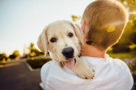
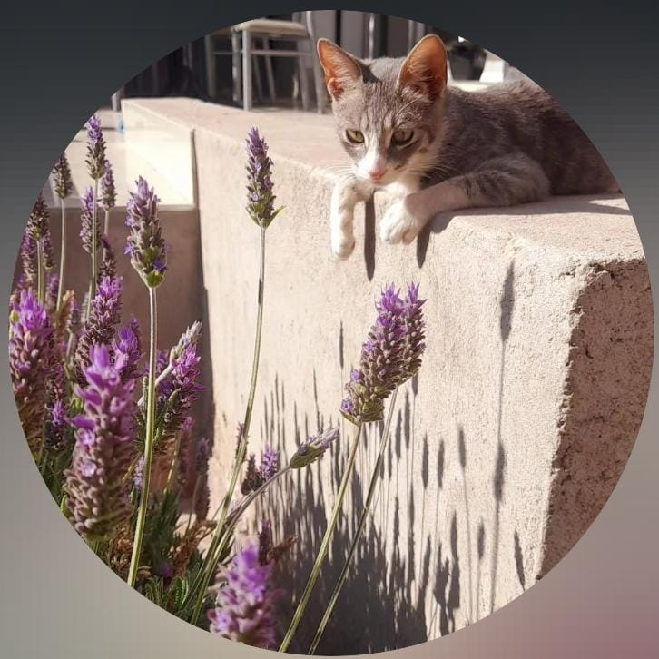
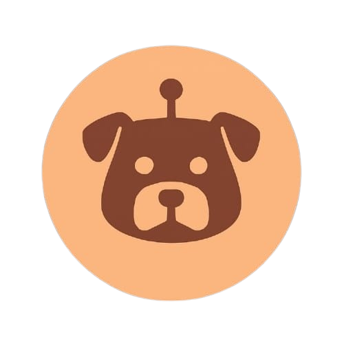

En Argentina hay más de 20 millones de animales en situación de calle y más de 5000 en el Gran Mendoza. Tu ayuda puede cambiar su destino 🐾
Adoptar ahoraConoce a algunos de los peluditos que acaban de llegar.
Cargando...
Animales en situación de calle en Argentina
Animales sin hogar en el Gran Mendoza
Adoptar, donar o difundir puede salvar vidas
Con tu ayuda podemos darle una segunda oportunidad a muchos animales. Cada colaboración se transforma en alimento, vacunas, castraciones, tránsito y medicamentos.


Somos estudiantes de la Escuela de Comercio Martín Zapata de Mendoza. Lo que nos une es el compromiso con la adopción responsable y el bienestar animal.



Adoptar, difundir, donar o simplemente compartir el mensaje. Juntos podemos construir una sociedad más responsable y compasiva.
¡No te preocupes! Podés ser un héroe igual. Convertite en Hogar de Tránsito y dale refugio temporal a un rescatado hasta que encuentre su familia definitiva.
¡Hola, guau guau! 🐾 Soy Huellin, el asistente virtual de Huella Consciente. ¿En qué puedo ayudarte?
